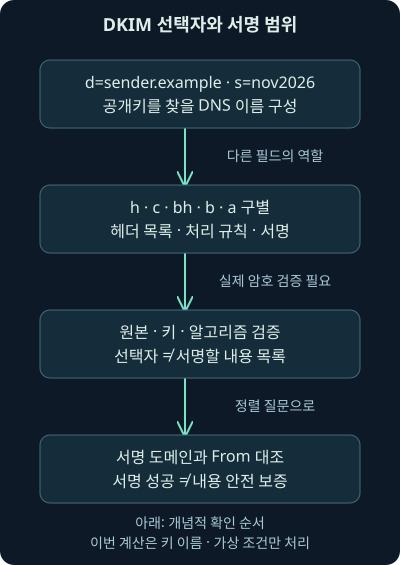
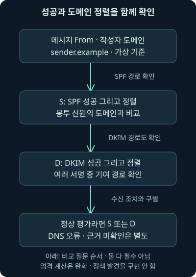
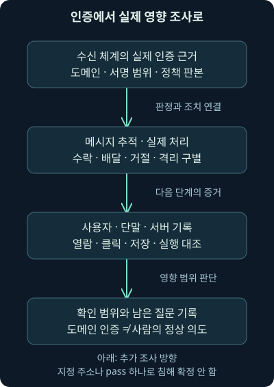

DKIM·DMARC: 서명·도메인 정렬과 메일 조사
둘째 날 14강. 서명 필드·키 선택·내용 변형·도메인 정렬을 이해하고 현재 DMARC 표준과 가상 조건 계산을 조사에 적용합니다.
1. SPF와 DKIM이 pass인데 왜 안심할 수 없을까요?
메일의 화면 From은 invoice@sender.example인데 봉투 도메인과 서명 도메인은 vendor.example이라고 해봅시다. 헤더에는 SPF pass와 DKIM pass가 있습니다. 두 검사가 성공했다면 sender.example이 작성한 안전한 청구서일까요? 성공한 검사의 주체와 사용자가 보는 도메인이 어떻게 연결되는지 더 확인해야 합니다.
앞선 13강에서는 발송 호스트의 허용과 표시 이름을 구별했습니다. 둘째 날 14강은 DKIM의 서명 구조, 서명 범위와 변형, DMARC의 도메인 정렬·정책·보고를 연결합니다. 두 기술이 해결하는 질문과 남겨 두는 질문을 각각 읽겠습니다.
예제는 직접 만든 가상 값입니다. 실제 서명·키 생성·DNS 조회·메시지 인증·수신 차단은 수행하지 않았습니다. 실제 실행한 것은 입력된 결과와 도메인의 조건 비교이며, 원본 워크북·VM·실제 메일 사건의 수행 결과가 아닙니다.
2. 봉인에 적힌 책임 주체와 편지 작성자는 다를 수 있습니다
문서 봉투에 회사의 봉인이 있고 봉인이 유효하다고 합시다. 정해진 검증으로 봉인과 문서의 관계를 확인할 수 있지만, 문서가 올바른 업무 요청인지 또는 어느 직원이 최종 승인했는지는 별개입니다. 발송 대행사가 봉인을 찍는 상황도 생각해 볼 수 있습니다.
DKIM, DomainKeys Identified Mail은 서명 도메인이 메시지에 책임 관계를 표시하고 수신자가 공개키로 그 서명을 검증하도록 하는 방식입니다. 전자서명은 비밀인 개인키로 만든 값을 대응하는 공개키와 규칙에 따라 검증하는 구조입니다. 내용을 남에게 보이지 않게 감추는 암호화와 목적이 다릅니다.
봉인 비유의 한계도 있습니다. DKIM은 메시지 전체를 아무 규칙 없이 한 덩어리로 봉인하지 않습니다. 선택된 헤더·본문 처리 규칙·길이·알고리즘과 실제 검증 상태를 확인해야 보호되는 범위가 드러납니다.
3. d와 s는 공개키를 찾을 이름을 만듭니다
DKIM-Signature 안의 d=는 서명 도메인, s=는 선택자, selector입니다. 선택자는 그 도메인의 여러 공개키 중 어떤 키를 찾을지 구분하는 이름입니다. 서명할 헤더와 본문을 고르는 부분 자체를 selector라고 부르지 않습니다.
가상 값이 d=sender.example, s=nov2026이라면 공개키 조회 이름은 nov2026._domainkey.sender.example입니다. 점은 DNS 이름의 레이블을 나누며 _domainkey는 DKIM 키 조회에 사용하는 이름 부분입니다. 이 이름을 계산한 것과 실제 TXT 응답·키를 얻어 서명을 검증한 것은 다릅니다.
한 조직에 키 하나만 영구적으로 있어야 하는 것도 아닙니다. 지역·서비스·위임·교체 시점에 따라 여러 키와 선택자를 사용할 수 있습니다. 서명 역할도 반드시 한 경계 MTA 한 대로만 제한되지 않습니다. DKIM의 서명 도메인과 선택자
4. 서명할 헤더는 h, 본문 요약은 bh에 연결됩니다
이제 DKIM-Signature 필드의 다른 태그를 읽겠습니다. 태그는 이름=값 형태로 구분한 항목입니다. 같은 짧은 이름이 DNS 키 레코드에도 쓰일 수 있으므로 어느 구조의 태그인지 먼저 확인합니다.
해시는 자료를 정해진 길이의 요약값으로 계산하는 방식입니다. 정규화는 계산 전에 표현을 정해진 규칙으로 처리하는 것입니다. 아래 표에서 두 말의 역할을 먼저 구별하고, 뒤에서 공백과 줄 바꿈이 왜 중요한지 연결하겠습니다.
| DKIM-Signature 태그 | 역할 | 해석할 때의 질문 |
|---|---|---|
| d | 서명 도메인 | 누가 책임 관계를 표시했나 |
| s | 공개키 선택자 | 어느 키 이름을 조회하나 |
| h | 서명에 포함한 헤더 이름 목록 | 어떤 헤더가 보호 범위에 포함되나 |
| c | 헤더·본문의 정규화 방식 | 어떤 표현 차이를 같은 것으로 보나 |
| bh | 처리된 본문에 대한 해시 | 본문 검사 조건이 맞나 |
| b | 전자서명 값 | 올바른 키·알고리즘으로 검증됐나 |
| a | 서명 알고리즘 | 지원·허용하는 알고리즘인가 |
기본 DKIM 규칙에서 From 헤더는 서명 범위에 포함되어야 합니다. “헤더 또는 본문 중 원하는 한쪽만 아무렇게나 서명하면 된다”라고 이해하지 않습니다. h에는 여러 헤더 이름과 순서가 들어가며, 중복 필드가 있으면 실제 인스턴스 선택 규칙도 중요합니다. 2026년 11월 7일 RFC 6376의 서명·검증 조건을 확인했습니다. 서명 범위의 규칙
5. 서명은 해시를 개인키로 암호화하는 일과 같은 말이 아닙니다
서명 과정에는 본문 처리와 요약, 선택 헤더 및 DKIM-Signature의 규칙에 따른 처리, 해당 알고리즘의 서명 계산이 연결됩니다. 수신자는 같은 규칙과 공개키로 검증합니다.
이를 모든 알고리즘에 대해 “개인키로 암호화하고 공개키로 복호화한다”라고 설명하면 잘못된 일반화가 됩니다. 알고리즘마다 서명의 수학이 다르기 때문입니다. DKIM은 본문을 비밀로 숨기는 기능도 아니므로 서명이 있어도 수신 경로의 내용 노출은 TLS 등 다른 보호와 나누어 봅니다.
이번 예제의 b와 bh는 실제로 사용할 수 없는 교육용 자리표시입니다. 이를 정상 서명으로 재현하거나 dkim=pass를 계산한 것처럼 표현하지 않습니다. 이름·필드 해석과 암호학적 검증을 따로 학습하는 것입니다.

6. 정규화는 어떤 표현 차이를 허용할지 정합니다
정규화, canonicalization는 검증 전에 자료 표현을 정해진 규칙으로 처리하는 것입니다. DKIM에는 simple·relaxed 같은 방식이 있고 헤더와 본문에 대한 선택을 구별합니다. c=relaxed/relaxed는 앞이 헤더, 뒤가 본문에 대한 방식입니다.
예를 들어 일부 공백 표현의 차이를 같은 것으로 처리할 수 있다는 설명과, 본문 내용이 임의로 바뀌어도 항상 통과한다는 설명은 다릅니다. 어떤 변환이 허용되는지는 해당 규칙·변경 위치·실제 서명 범위에 달려 있습니다.
조사자는 화면에 표시된 문장만 비교해서 서명 실패를 단정하지 않습니다. 원본 메시지의 바이트·줄 끝·접기·중복 필드·정규화 방식을 보존해야 합니다. 잘못된 복사나 재저장으로 분석용 사본을 바꾼 것은 아닌지도 확인합니다.
7. 본문의 길이를 제한한 서명에는 경계가 있습니다
선택 태그 l=은 정규화한 본문 중 해시에 포함한 바이트 수를 제한할 수 있습니다. 이 값이 없으면 본문 전체가 대상인 규칙과 구별됩니다. 바이트는 실제 자료의 단위이며 화면 글자 수와 항상 같지는 않습니다.
따라서 DKIM pass를 보고 모든 첨부·화면·추가 내용이 같은 범위로 보호됐다고 단정하지 않습니다. 포함된 헤더, 본문 길이 조건, 서명 후 변경과 수신 도구의 표시를 확인해야 합니다. 길이 밖의 자료를 제품이 어떻게 다루는지도 정책 문제입니다.
이 조건을 읽는 목적은 조사 메모에 보호 범위를 정확히 적기 위해서입니다. 실제 메일을 수정·재전송한 결과로 설명한 것은 아닙니다. 본문 길이 제한의 의미
8. 전달과 메일링 리스트는 서명 결과를 바꿀 수 있습니다
전달 서버가 연결 상대를 바꿔도 서명 대상 내용이 유지되면 DKIM이 유지될 가능성이 있습니다. 그러나 제목·본문·꼬리말·주소를 바꾸는 중간 처리라면 서명 범위와 정규화에 따라 실패할 수 있습니다. 실제 변환을 확인해야 합니다.
서명 실패는 내용 변경·키 조회·지원 알고리즘·만료·잘못된 원본 등 여러 질문으로 나뉩니다. 실패 하나로 공격자가 내용을 바꿨다고 확정하지 않습니다. 반대로 서명 부재를 서명 실패와 같은 상태로 세지도 않습니다.
서명도 여러 개일 수 있습니다. 하나의 서명이 실패했어도 다른 서명이 어떤 도메인·범위로 검증됐는지 남겨야 합니다. 메시지의 첫 DKIM 결과 하나만 읽어 전체 인증을 끝내지 않습니다.
9. 현재 알고리즘 조건과 당시 화면을 구별합니다
2026년 11월 7일 RFC 8301의 DKIM 알고리즘·키 크기 갱신을 대조했습니다. rsa-sha1을 현재 유효한 선택으로 권하지 않으며, 이 문서는 RSA 서명 키 최소 1024비트와 2048비트 이상 사용 권고를 구별합니다. 이를 모든 제품의 현재 정책·영구적인 최신 기준이라고 표현하지 않습니다. DKIM 암호 사용 갱신
RFC 8463은 Ed25519-SHA256 서명 방식도 추가합니다. 실제 제품의 지원·관리 정책·발송 서비스의 설정을 확인해야 하며, 알고리즘 이름이 보인다는 사실과 성공적인 검증은 다릅니다. 추가 서명 방식
개인키는 발송 측에서 보호해야 하고 공개키를 DNS에 게시하는 일과 역할이 다릅니다. 키 교체·위임 종료·폐기 뒤 현재 조회 결과만으로 과거 메일을 완전히 검증하지 못할 수도 있습니다. 이번에는 키를 생성·조회·보관하지 않았습니다.
10. DKIM pass의 도메인이 화면 From과 같나요?
이제 첫 사례로 돌아가겠습니다. vendor.example의 DKIM 서명이 유효하다고 해도 그것만으로 화면의 sender.example이 책임을 표시했다고 확정할 수 없습니다. DKIM의 서명 도메인과 메시지 작성자 도메인은 다른 역할입니다.
또한 SPF는 봉투 신원의 허용을, DKIM은 서명 도메인과 서명 범위를 다룹니다. DKIM도 MAIL FROM을 검증하는 검사라고 한데 묶지 않습니다. 두 검사에 pass가 있어도 다른 도메인에 관한 성공일 수 있습니다.
이 관계를 메시지 From의 도메인에 연결하는 것이 다음에 볼 DMARC의 핵심입니다. 주소의 사서함 부분과 표시 이름까지 모두 같은 문자열이어야 한다는 검사는 아닙니다.
11. DMARC는 어느 도메인의 사용이 검증됐는지 연결합니다
DMARC, Domain-based Message Authentication, Reporting, and Conformance는 메시지 From의 작성자 도메인과 인증된 SPF·DKIM 식별자를 연결하고 도메인 소유자의 처리 선호·보고를 표현하는 체계입니다. 여기서 도메인 정렬, alignment는 그 식별자의 도메인 관계를 뜻합니다.
SPF가 통과한 신원의 도메인 또는 통과한 DKIM의 d 도메인이 From의 도메인과 정렬되는지 확인합니다. 검증 성공과 정렬을 함께 봐야 합니다. 도메인 이름이 같아도 인증이 실패한 경로는 성공 근거가 아닙니다.
현재 DMARC 핵심 명세는 2026년 5월의 RFC 9989이며 RFC 7489·9091을 대체합니다. 2026년 11월 7일 원문을 확인했습니다. 예전 교재의 기본 원리는 이어지지만 최신 설명을 RFC 7489 하나에만 고정하지 않습니다. 현재 DMARC 핵심 명세
12. 성공하고 정렬된 경로가 하나라도 필요합니다
기호를 먼저 정의하겠습니다. S는 “SPF 성공이고 그 도메인이 정렬됨”, D는 “적어도 하나의 DKIM 성공이고 그 서명 도메인이 정렬됨”이라는 참·거짓 조건입니다. 참은 조건을 만족, 거짓은 만족하지 않음을 뜻합니다.
정상적으로 평가를 마친 상황에서는 DMARC의 성공 조건을 S 또는 D로 읽을 수 있습니다. 두 방법이 반드시 모두 성공해야 하는 AND 조건과 다릅니다. 실제로 필요한 DNS 평가를 완료하지 못하는 오류 상태까지 이 두 값으로 억지로 바꾸지는 않습니다.
SPF와 DKIM이 모두 pass라도 두 도메인이 From과 정렬되지 않으면 성공 조건을 만족하지 못합니다. 반대로 SPF가 실패했어도 정렬된 DKIM 성공이 있으면 그 경로가 조건을 만족할 수 있습니다. 성공·실패·오류의 구분

13. 엄격 정렬은 도메인 자체의 일치를 봅니다
엄격 정렬, strict alignment는 비교하는 도메인이 같아야 하는 방식입니다. sender.example과 mail.sender.example은 엄격 모드에서 다른 도메인입니다. invoice@sender.example과 bounce@sender.example의 사서함 이름이 다르다는 이유만으로 도메인이 불일치하는 것은 아닙니다.
DNS 도메인 비교에서는 대소문자 표기 차이와 실제 다른 이름을 구별합니다. 반면 sender.example과 sender-example.example처럼 모양이 비슷한 다른 이름을 임의로 같다고 처리하지 않습니다. 사용자에게 익숙해 보인다는 것과 정렬 조건은 다릅니다.
From 필드가 여러 개이거나 주소가 정상 형식이 아니라면 제품과 명세의 해당 처리를 확인해야 합니다. 아무 주소 하나를 골라 정상적인 단일 작성자 도메인 사례처럼 계산하지 않습니다. 이번 프로그램은 이미 정해진 하나의 도메인 입력만 받습니다.
14. 완화 정렬을 마지막 두 단어 비교로 구현하지 않습니다
완화 정렬, relaxed alignment는 조직 도메인 관계를 이용하는 방식입니다. 조직 도메인은 단순히 사람이 보기 좋게 정한 회사 이름이 아니라 명세의 발견 절차에 따라 결정하는 도메인입니다. 정책의 aspf와 adkim은 각각 SPF·DKIM 정렬 방식을 나타내며 s는 엄격, r은 완화입니다.
현재 RFC 9989는 정책·조직 도메인 발견에 DNS Tree Walk라는 DNS 이름 계층의 조회 절차를 설명합니다. 이전의 공용 접미사 목록인 PSL에 의존하던 설명과 차이가 있습니다. 마지막 두 레이블만 자르거나 문자열 끝이 비슷한지를 비교하면 같은 결과를 보장할 수 없습니다.
새 표준의 존재와 모든 수신 제품의 구현 전환은 다릅니다. 특정 서비스를 조사한다면 적용 판본·정책 발견·실제 결과를 확인합니다. 이번 계산기는 완화 정렬·조직 도메인·Tree Walk를 구현하지 않았습니다. 정책 발견과 판본 차이
15. 정책 레코드는 조건과 처리 선호를 담습니다
다음은 _dmarc.sender.example에 게시한다고 가정한 미게시 가상 TXT 값입니다. 실제 DNS 설정을 변경한 것이 아닙니다.
v=DMARC1; p=none; aspf=s; adkim=s; rua=mailto:dmarc-report@reports.sender.examplev=DMARC1은 레코드의 판본 표식, p=none은 DMARC 실패만을 이유로 기존 처리를 바꾸라고 요구하지 않는 관찰 성격의 정책입니다. aspf=s와 adkim=s는 두 경로에 엄격 정렬을 지정합니다. rua는 집계 보고를 요청할 목적지이고 mailto:는 메일 주소로 된 보고 목적지를 표현합니다.
보고 주소를 적었다고 모든 수신자가 반드시 보고서를 보내는 것은 아닙니다. 외부 목적지 사용·권한·보고 지원·개인정보·보존 정책도 확인해야 합니다. 레코드의 예시를 운영에 그대로 게시하거나 이 예시 주소로 메시지를 보내지 않았습니다.
16. none·quarantine·reject와 실제 조치는 다릅니다
quarantine은 실패한 메일을 의심스럽게 취급하도록, reject는 거절하도록 도메인 소유자가 제시하는 처리 선호입니다. 이 값과 실제 수신자의 대기열·격리·배달·거절 기록은 구별합니다. 성공·실패 조건과 최종 조치도 다른 항목입니다.
현재 RFC 9989는 수신자가 다른 지식·정책을 적용할 수 있음을 명시합니다. 정당한 전달·메일링 리스트와 남용을 함께 고려해야 하므로 reject라는 문자열만 보고 실제 거절이 완료됐다고 보고하지 않습니다. 반대로 DMARC pass인 메시지도 다른 남용 검사에서 거절·격리될 수 있습니다.
필요한 정책 DNS 조회가 오류로 완료되지 않았거나 유효한 정책을 찾지 못한 경우도 구별합니다. 실제 적용하지 않은 검사를 fail이라고 만들지 않습니다. 수신자의 메시지 추적·처리 이유·예외·커넥터 기록을 대조해야 합니다. 수신 처리와 정책의 관계
17. 과거의 pct 안내와 현재의 시험 표기도 구별합니다
예전 RFC 7489 자료에는 pct로 일부 비율의 적용을 요청하는 설명이 있습니다. RFC 9989는 이를 제거하고 시험 표기인 t를 설명합니다. t=y·t=n이라는 값의 의미와 수신 구현의 적용을 현재 문서·제품 기준으로 확인해야 합니다.
t=y는 시험 중이라는 요청입니다. 명세는 실패 메시지에 지정한 정책보다 한 단계 낮은 처리를 기대하는 것으로 설명합니다. 가령 quarantine은 none, reject는 quarantine에 대응하며 중간 시스템의 특별 처리 규칙도 관련될 수 있습니다. 기본값인 t=n은 명시한 정책을 적용해 달라는 요청입니다. 시험 여부도 인증 성공 조건이나 실제 배달 완료를 뜻하지 않습니다.
기존 제품 문서나 과거 헤더에 pct 관련 값이 보인다고 그 기록을 현재 표준의 필드와 똑같이 바꾸지 않습니다. 사건 시점·사용한 표준·구현 버전을 같이 적습니다. 새 태그가 추가됐다고 과거 제품이 자동으로 이를 지원한다고 가정하지도 않습니다.
이번 강의의 운영 예시는 p=none 가정에 한정했고 시험 태그를 게시·검증하지 않았습니다. 최신 보충은 현재 조사에서 정책 의미를 잘못 읽지 않기 위한 것이지 실제 설정 전환을 완료했다는 보고가 아닙니다. pct 제거의 배경과 t
18. 보고서는 검사의 분포와 원인을 조사하는 자료입니다
집계 보고는 도메인·발송 경로·인증 결과·처리 등 일정 기간의 정보를 모아 정상 발송 누락과 오용 후보를 찾는 데 사용할 수 있습니다. 한 숫자를 실제 사용자 수나 침해 성공 건수로 바로 바꾸면 안 됩니다. 보고한 수신자·기간·집계 단위를 확인합니다.
현재 보고 문서는 2026년 5월의 RFC 9990과 RFC 9991로 나뉩니다. 실패 보고는 개인 정보와 메시지 내용이 노출될 수 있어 수신자가 생략·가림 처리할 수 있습니다. 모든 실패 메일의 전문이 반드시 돌아온다고 기대하지 않습니다. 집계 보고, 실패 보고와 개인정보
보고가 없으면 실제 발송 부재 외에도 요청·목적지 권한·수신자의 지원·전송·수집·보존을 확인합니다. 보고 체계를 설정하는 일과 실제 보고를 확보·검증한 일은 다릅니다. 이번에는 보고서를 요청하거나 발송하지 않았습니다.
19. 가상 입력으로 엄격 조건을 실제 계산했습니다
가상 사례 파일, 조건 계산 프로그램, 실행 안내를 제공합니다. Python 3.12.14에서 다음을 실제 실행했습니다.
python compare_alignment.py cases.json프로그램은 입력된 d·s로 키 조회 이름 문자열을 만들고, 입력된 SPF·DKIM 결과와 하나의 From 도메인으로 엄격 정렬 조건만 비교합니다. 실제 DKIM 서명 검증·SPF 평가·정책 발견·Tree Walk·수신 조치 계산을 수행하지 않습니다.
출력의 키 이름은 nov2026._domainkey.sender.example, 선언한 헤더 목록은 from·to·subject·date였습니다. 실제 공개키를 조회하거나 메시지의 해당 헤더를 서명한 결과가 아닙니다. 필드의 역할을 구별하는 로컬 문자열 계산입니다.
20. 일곱 사례는 다른 질문의 차이를 보여 줍니다
아래 표는 실제 프로그램의 조건 계산 결과입니다. pass·fail은 미리 주어진 검사 결과를 이용한 가상 조건이며 실제 수신 시스템의 DMARC 판정이 아닙니다.
| 가상 사례 | 입력 조건 | 엄격 조건 계산 |
|---|---|---|
| A | SPF·DKIM은 vendor.example로 성공, From은 sender.example | fail: 성공 도메인이 정렬되지 않음 |
| B | SPF 실패, sender.example의 DKIM 성공 | pass: DKIM 경로가 기여 |
| C | sender.example의 SPF 성공, DKIM 목록 없음 | pass: SPF 경로가 기여 |
| D | 같은 도메인이지만 두 검사 모두 실패 | fail: 이름 일치만으로 부족 |
| E | 첫 서명은 vendor.example, 두 번째 성공 서명은 sender.example | pass: 두 번째 정렬된 서명이 기여 |
| F | 두 검사 성공·일치지만 결과 신뢰를 가정하지 않음 | unverified: 실제 근거로 받아들이지 않음 |
| G | 성공 도메인은 mail.sender.example, 엄격 기준은 sender.example | fail: 엄격 모드에서는 다름 |
G를 완화 정렬에서도 반드시 실패한다고 일반화하지 않습니다. 조직 도메인 발견과 실제 정책을 확인해야 합니다. 모든 사례의 실제 인증 검증 값은 거짓이고 내용 안전·사건 판정은 미확인으로 남았습니다.
21. 입력에 신뢰라고 적는다고 진위가 검증되지는 않습니다
results_trusted_in_fixture는 예제에서 해당 결과를 조건 계산의 전제로 사용할지 정한 가상 값입니다. true는 그 전제를 놓겠다는 뜻이지 실제 메일 서버의 권위·서명·로그 수집을 검증한 인증 자료가 아닙니다.
F처럼 false이면 조건에 맞는 도메인이 있어도 최종 표시는 unverified로 남깁니다. 실무에서는 신뢰 가능한 수신 경계의 Authentication-Results·DNS·원본 메시지·제품 로그와 연결할 근거를 확보해야 합니다. 예제의 스위치를 켜는 일로 대신할 수 없습니다.
또한 프로그램은 잘못된 도메인·미지원 정렬 방식·결과 값·입력 계약을 거부합니다. 이런 교육 도구의 오류와 실제 메일 인증의 temperror·permerror를 같은 값으로 섞지 않습니다.
22. 통과해도 내용의 안전성과 사람의 의도는 남습니다
정렬된 도메인 사용이 확인돼도 계정 탈취·승인된 발송 서비스 오용·유사 이름 도메인·악성 링크·첨부 위험은 남습니다. 정상 조직의 진짜 계정이 악용된 메일은 인증 검사를 통과할 수도 있습니다. 인증을 통과했다는 사실이 특정 사람의 정상 의도를 증명하지 않습니다.
반대로 인증 실패만으로 실제 사용자가 링크를 눌렀거나 단말에서 파일이 실행됐다고 결론 내릴 수 없습니다. 우편함 배달·열람·클릭·파일 저장·실행·후속 접근의 증거를 단계별로 확인합니다.
도메인에 SPF·DKIM·DMARC를 게시하는 일과 수신자가 들어오는 메일을 평가하는 일은 서로 연결되지만 같은 작업은 아닙니다. 이를 모두 갖추면 모든 사칭·스팸을 막는다는 절대적 보장으로 설명하지 않습니다. 오래된 상위 사이트 도입률도 현재의 보안 수준 통계로 옮기지 않습니다.

23. 하나의 조사 메모로 정리해 보겠습니다
가상 A에 대해서는 “제공된 SPF·DKIM 성공 도메인은 표시 From과 엄격 정렬되지 않는다. 실제 수신 경계 결과·정책·DNS 시점 자료는 미검증이므로 이 계산을 실제 DMARC 판정으로 대체하지 않는다”라고 쓸 수 있습니다.
실제 인증을 확인한 사건이라면 검사 주체·신원·도메인·서명 범위·정책 판본·처리 결과를 명시합니다. 이어서 “내용과 사용자 행위는 별도”라고 남기고 메시지 추적·우편함 감사·단말·웹 프록시·서버 기록의 필요한 범위를 연결합니다.
원문 보존과 복사·정규화·재조립 조건도 기록하세요. 암호화된 네트워크만 수집했다면 실제 메일 본문이나 서명 자료가 확보됐다고 상상하지 않습니다. 현재 남은 근거로 확인할 수 있는 질문과 다음 질문을 구별합니다.
24. 복습: 서명·정렬·조치를 나누어 적용해 보세요
질문 1. selector는 서명할 본문·헤더를 고르는 목록인가요?
해설: 공개키를 찾을 이름의 구분자입니다. 서명 헤더 목록 h와 본문 처리 규칙 등과 구별합니다.
질문 2. d=sender.example, s=nov2026이면 키 이름은 무엇인가요?
해설: nov2026._domainkey.sender.example입니다. 이름을 계산한 것과 DNS 조회·서명 검증 성공은 다릅니다.
질문 3. DKIM을 모든 경우 개인키 암호화·공개키 복호화라고 설명해도 되나요?
해설: 알고리즘별 전자서명과 검증입니다. 모든 서명 방식의 수학을 그 표현으로 일반화할 수 없고 내용 비밀화도 아닙니다.
질문 4. From은 빼고 원하는 본문만 서명하면 기본 DKIM에 맞나요?
해설: 기본 규칙은 From을 서명 범위에 포함하도록 합니다. 헤더 선택과 본문·서명 계산의 조건을 함께 봅니다.
질문 5. DKIM pass면 모든 표시 내용의 모든 바이트가 보호됐나요?
해설: h·정규화·l 같은 범위 조건을 확인해야 합니다. 보호 범위와 렌더링·추가 내용은 같지 않을 수 있습니다.
질문 6. 전달 뒤 서명 실패는 공격자 변조를 확정하나요?
해설: 정상 변환·원본 손상·키·만료·알고리즘·조회 문제도 확인해야 합니다. 결과와 원인을 구별합니다.
질문 7. SPF·DKIM 두 개가 pass면 DMARC도 반드시 pass인가요?
해설: From의 작성자 도메인과 정렬된 성공 식별자가 있어야 합니다. A는 다른 도메인의 성공이라 엄격 조건을 만족하지 않습니다.
질문 8. SPF가 실패하면 정렬된 DKIM 성공도 쓸 수 없나요?
해설: 정상 평가 상황에서 성공·정렬된 경로 하나가 기여할 수 있습니다. B는 DKIM 경로로 조건을 만족합니다.
질문 9. 사서함 이름이 다르면 도메인 정렬도 실패하나요?
해설: 도메인의 관계를 보는 검사입니다. 서로 다른 사서함이 같은 도메인을 사용한다고 자동 불일치가 되지는 않습니다.
질문 10. mail.sender.example은 sender.example과 엄격 정렬되나요?
해설: 서로 다른 도메인이므로 엄격 모드에서는 아닙니다. 완화 모드는 실제 조직 도메인 발견·정책을 별도로 확인합니다.
질문 11. 현재도 DMARC 정책 발견을 마지막 두 레이블 비교로 대신하나요?
해설: RFC 9989의 DNS Tree Walk 등 정해진 절차를 확인해야 합니다. 예전 PSL 설명과 제품 구현 차이도 구별합니다.
질문 12. p=reject면 실제 거절됐고 pass면 반드시 배달됐나요?
해설: 도메인 소유자의 처리 선호와 수신자의 실제 조치는 다릅니다. 정책·다른 검사·메시지 추적 기록을 봅니다.
질문 13. rua를 적으면 모든 실패 메일 전문이 보고되나요?
해설: 집계와 실패 보고의 종류·지원·권한·개인정보 조건이 다릅니다. 보고를 요청한 것과 실제 수신·확보한 것은 다릅니다.
질문 14. 조건 계산기에서 pass면 메일 인증과 내용 안전도 검증됐나요?
해설: 입력된 가상 결과와 도메인을 비교했을 뿐입니다. DNS·실제 서명·수집 권위·정책·사람·내용·실행은 검증하지 않았습니다.